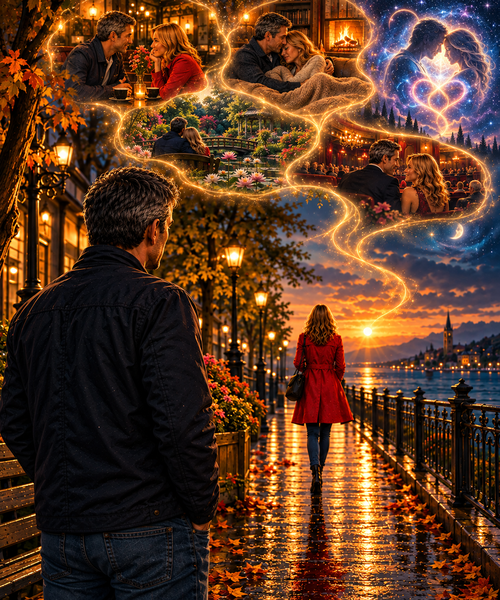

Moving on from you, and my fancy of true love,
shattered and gone,
hurt by your abstinence,
my mind and soul completely evades me
and you have moved on past,
with distant cries of woe I scream to you.
And my passionate,
beating heart which is truly broken,
because I cannot be in your presence
and warmth of your calm peace,
What can I recall of our simple connection?
Trances and talking in your front room.
Feelings of joy and happiness just to be seated side by side with you,
meetings in the morning to late afternoon,
stolen love making in a hotel room,
and passions mounting while sitting in our cars,
parked away from prying eyes
and people who could turn into unfriendly spies.
Who look to the sky and see nothing of a blue clear heaven,
Was it a silly game,
played for our egos fear of old age
and to go beyond the normality,
predictability of every day space and time?
With hot, daring, sweet kisses,
I spend all of my time thinking,
with deep feelings do I ponder you,
trying to construct apt and purposeful rhyme,
I am unsure now on how to move to you,
I am indeed trying not to be blue
or to have deep meaningful thoughts of you,
however,
I wish to take you into a high place of love,
where you can quell all your fears,
meditate on me and love me easily,
cosily by a warm log fire,
in an cottage, family, antique room,
full of sage and antiquity,
perhaps a ski lodge
or a honeymoon farm retreat,
or maybe a wooden, spruced, pined home on the beach,
within a snug sea reach,
where we can play,
create sand castles,
adorned with smooth spellbound shells,
Like a porcelain doll do I try and treat you with kid gloves,
wanting to do all your washing-up,
iron all your clothes,
peel all your spuds,
be kind to all of your children
and help your grow in your hypnotic occupation,
How can we square the die,
of our unfair lover’s lair,
be tranquil and make our own little Robins nest?
Can it really be possible that you and me,
could define our own tiny corner in this vast expanse,
and chaotic universe?
Could we spend our time,
dwelling on each other needs, fears,
and our excited dreams and fantasies of each other?
I have to change and go beyond me
and my petty needs,
to grow-up,
be an adult and live the vision which God has given me for a moment,
to revel in the gift of real human love in an eternity of transcendent experience,
and do I know for sure that you could be the one.
Yes I know this path is full of immediate grief
and maybe it is our only divine,
predestined release,
as you see I am resolute in my perceived sincerity,
I wish to love you forever,
unconditionally,
to learn and know that this is all I need and will ever want:
just you in this life
and the next,
and the next,
so there is a revolution of love which is pictured in infinity of you and me,
no one else and no other would I want to truly worship.
Can this be possible?
Is this what is in God’s plan for our simple souls?
That it is all a dedication of love for us,
which we can repeat and revisit never bored
or forlorn by our souls eternal being.
I want so much for us to be together in a spiritual, physical, and sexual truth,
that is going to be enough for the confusion and danger,
which surrounds our obscure, risky, dynamic
and every changing mystical human nature.